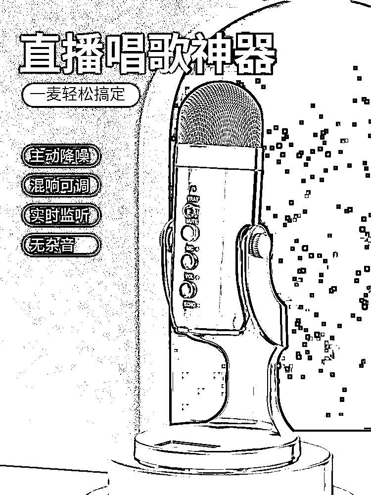
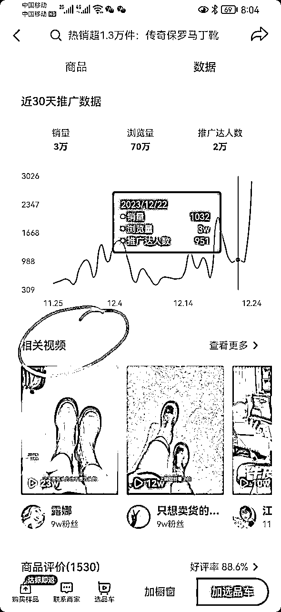

来源：https://v1e5tzw5w2.feishu.cn/docx/DDfydGAL7oJppXxDx0BcMGnaneg
大家好，我是钱哥老矣，坐标苏州，37岁互联网连续创业者，我的网赚路径：淘宝卖货-淘宝客-无人直播-半无人手播-抖音ip直播/视频号直播。目前在做的就是抖音/视频号带货/IP带货相关内容。通过自己的努力已还清了100万贷款，2024年轻装上阵，必将是爆发的一年。来生财看到了太多年轻有为、高认知的小伙伴，真羡慕你们在最好的年龄拥有了这么好的思维认知，不禁发出“钱哥老矣，尚能饭否？”的感慨！希望能和你们广交朋友，向你们学习！以下分享的内容是我今年下半年在做的项目：抖音单品绿幕手播带货，觉得有用的点点赞收藏留下足迹，让我们来相互认识一下。
以下步入正题：
不知道大家刷抖音时有没有刷到过下图所示直播间，这种就是我今天要拆解的内容：单品打爆绿幕手播直播间。
卖的产品是女鞋，佣金20%-30%左右，退货率30%左右。
这种直播间以画面强展示商品为特点，曝光进入率高于同类其他直播间，更容易拿到高的实时在线人数（当曝光进入率60%，人均停留30秒以上就会千人在线），产生羊群效应，再结合高性价比的商品，很容易白嫖到抖音的自然流量，适合了解抖音基本规则，想入局直播带货的，不敢露脸的，口才不是很好的小伙伴，全程不需要露脸，而且是主播读稿方式，对主播的要求更低一些，也可以作为真人直播的一个过渡阶段，用来熟悉规则，熟练口才和提升主播对流量的感知能力。
先说结果，硬件总投入大约6000元左右，运气好小爆一场就回来，当然运气某种意义上也是实力和能力的一种体现，普通人，基本做到单账号月入1-2w左右，熟练后可以多账号不同时段播，多账号用的网线和硬件是可共享的，建议网络硬件不要超过3个以上账号共用。我自己是做了两个账号，大约变现了30w，晒几张图片，一张是我第一次单场破十万gmv，自己单人直播了18个小时没下播的记录，一张是上了带货榜的截图记录：
硬件要求如下（最少满足以下要求）：
抖音直播伴侣的需求一年比一年高，有条件的小伙伴配置可以往高配配。
罗技摄像头，目前主流用C1000e（闲鱼二手600-700元）或者差一点的罗技C930，价格在200-300元。
品牌推荐：好牧人

淘宝上去淘一块，想好固定方法，一般是钉墙上，不方便的话买硬的绿幕或者买个支架。
样品鞋子建议拍36、37码，小码数上镜效果更好看。
ps：说下为什么推荐卖鞋子尤其女鞋，因为做过直播的小伙伴都知道，直播间一旦打上标签后转品是很难的，但鞋子一年四季，尤其一到换季，对女士来说就成了刚需品，春秋有单鞋，夏天有凉鞋，冬天有棉鞋，平底的卖完还可以卖高跟的，低腰卖完还能卖高腰，总的来说品多，卖的久，只要针对好人群年龄段选品就行，账号存活周期更长且鞋子容易找到高溢价的商品，比如我们卖的都是50元左右的牛皮女鞋，样子也不差，看了谁不心动，至于实际是不是牛皮，只要商家产品里有写我们就能写，否则涉及到虚假宣传！
规格建议 直径20cm 25秒一圈 承重3公斤左右。
自己的灯光够就不用补光，灯光不够加个补光灯，灯球，灯箱，补光灯板都行（选便宜的就行）功率选大的，目的就是让你的绿幕完全融入到你的背景里就行了。
1--2人，适合夫妻档，或者小型工作室，熟练之后或者流量稳定之后一人即可。
以下按两人我讲一下分工
主要工作：①负责摇手
②读产品介绍稿
③当人数少时会点对点，点用户名字增加基础互动
主要工作：①给主播搭话，增加气氛，增加下单 成功率。例如喊5.4.3.2.1上车，没拍到的抓紧拍一下，秒拍秒付不要占库存
②简单的投流工作
③拉时长过程中主副播互换，让主播有个休息的时间
我把详细的话术放在下面了，由于太长，我新建了个文档，副播说的话我用黄色标记了
用老号没开播的号去开播权重会高一些，如果没有老号的话需要新注册账号，新账号（没开过播的账号）开播首月是有流量扶持期的，我们就是利用这个时期把账号做起来。
注意点：
1.并不是注册的越久就可以称之为老号，老号是指经常活跃刷抖音，最好还在抖音购过物的正常用户号。
2.因为我们采用的是直播伴侣直播，开播时让家人扫码直播伴侣其实也是可以开播的，因涉及提现问题，最好用亲人的。
3.如果想掌控提现的自主权或者账号的所有权，可以开通员工号直播，员工号需要有一个主号开通蓝v认证，这个是后续批量做时需要考虑的。
老号的话不需要养号这个过程，新号的话建议养号2周以上，避免被判定为营销号！
市面上关于养号的过程说的神乎其神，其实概括为一句话就是模拟正常人的行为习惯即可。
那我们不妨思考下正常人刷抖音的习惯有哪些？
1.碎片化时间刷抖音
2.遇到好的直播间或作品点点赞点点关注
3.有移动轨迹、不会固定到一个地方不变
4.遇到好的商品，在直播间购购物
5.有好的开心的事情偶尔发个抖音
那我们基本每天把上面的动作做一下就完成养号的过程了。
养号用不用多刷同行直播间？
答案是不用的，看播标签和直播标签不是同一种标签，看播打的是行为兴趣标签，直播发作品打的是创作者标签。
这步是重重之重，能否成功就看这一步，所以用红色标记，想实操的小伙伴，这一步建议反复观看几遍
1.刷千分开橱窗+交500保证金（千粉价格大约150左右，为了安全起见建议用官方渠道投千川通过作品涨粉）。
2.15天内，至少有五天每天发过一条作品，生活类就行。这是申请直播伴侣开播的硬性条件。
3.重启直播伴侣连接好摄像头。
4.调节好音量，只调麦克风下的选项就行。
我这面测试的是 麦克风输入音量60 增益-5 降噪-30

5.检查好商品的链接和佣金。
1.投付费，小店随心推 选项是成交+自然推荐 时间2小时 100-200元。
2.副播刷热卖，只需要加到购物车到付款输密码那一步，不需要实际付款，我们一般刷到100销量左右。
3.以付费开始进人为话术开始，在线峰值过后一到两分钟开始弹窗放单。
4.学会看数据大屏，直播间自然流（黄线）为主时多做浅层数据（停留、互动、转粉），付费流（蓝线）为主时尽量去放单做成交。
5.话术大约设计15分钟为一轮，要学会封单，制造稀缺性，封单后加售后保障话术，减少售前退款。
6.很多人问联盟的商品怎么放单封单，答案很简单，直接把它从小黄车里×掉就行，放单时候再从橱窗添加进来。
7.开播30分钟后观看付费数据，会出现以下结果（以女鞋为例）：
总结一下
第一场直播建议时长两个小时左右，第一个半点主要做数据，数据包含停留、互动、转粉。第二个半点看数据，这里指的主要看付费数据，数据达标，继续让付费跑，不达标重投一笔。第三半点主要做成交，第四个半点决定是否继续播下去。2小时后如果黄线抬头，就继续播，只要黄线比初始高就可以一直拉时长。正常播3-5场都能起自然流。以下是我之前起一个号的 记录：

很多人纠结付费会不会压制自然流，其实是不会的，但表象上似乎又压制了自然流，因为停了付费后场馆小了，其实我们可以理解为流量大必泛，小必精，当然严格上讲付费也撬动不了自然流，我们新号微付费介入，目的是给账号能快速的打上标签，从而反推得到相对精准的自然流，然后自然流有了成交自然会有更多的自然流做奖赏。
当账号达到一定层级之后，为了稳住在线人数或者为了突破直播间在线阈值我们一般也会选择追加投放小店随心推，投放方法如下：
分钟流速快的话（150/分以上）一般每三波放单投一笔100小店随心推 成交+智能推荐
分钟流速慢的话一般一个半小时叠投一次小店随心退100元 成交+智能推荐
账号违规之后，连续两三天不给推流，或者新号开播五场拉不起来自然流我们都会选择账号重启，一般就是停播7天后当做新号重新开播，如果还不行的话就要考虑注销重新注册了。
精选联盟商品加橱窗的页面相关视频里找或者找商家去索要，一般商家都会有的，如果有条件自己去模仿拍摄效果更好。视频大约1分钟就可以，在直播伴侣里记得勾选循环播放。

1.对背景视频进行二次剪辑，混剪、加关键帧。
2.建议摄像头画面占直播屏幕的一半以上。
3.样品到手自己拍一下效果更好，其实就是几个穿鞋的动作。
视频拍摄参考
这个正常，只要这种形式的直播很容易出这个提示，但我们实操下来不影响流量，所以没做处理。
不要以上车为前提去要求观众扣一扣二。
小黄车里没有你讲解的商品也会违规，应对：挂同类高价产品或让商家开通专属链接就行。
不要以因果关系去要求大家去点关注亮灯牌，比如说点关注亮灯牌来给你加急发货或加运费险。
出现此违规一般当场限流，我们一般选择直接下播。
因为绿幕有着天然自带高曝光进入率的特点，所以很多小伙伴把它延用到了其它产品上，我来举两个例子抛砖引玉，大家也可以说说你看到过在那些商品上应用或者觉得可以用在哪些商品上？
小家电上的应用 无痕双面胶、对联贴上的应用
绿幕直播间由于不需要真实搭建场景，所有的背景是在电脑直播时进行制作（或是图片或是视频），所以得出结论一台电脑就是一个独立的直播间，因此更有甚者用一个主播搭出了100个直播间，进行卖货+收徒模式，据说回本周期相当的哇塞，当然这个需要相对大的一个资金投入和场地及难点的攻破，这也是我目前没做的一个原因，明年有机会的话可能会试下这个模式，看能否跑通。而且此模式跑通很大可能也适合其它的直播平台，感觉是个很不错的机会~
好了，我的分享完毕，有不足之处欢迎大家多多指教！其实抖音直播带货快两年了，从之前的无人直播到现在，也断断续续玩废30多个账号，曾经也追求过所谓的技巧，学习了很多所谓起号的方法，什么正价起号、亏品起号、鱼塘起号、卡广场起号、七天螺旋起号，FAX起号等不胜枚举，到头来才明白，所谓直播带货，货才是核心，货不行，所有的技巧都是白搭，只有货好了，技巧才能成为放大器，希望我的心得能对你们有所帮助。